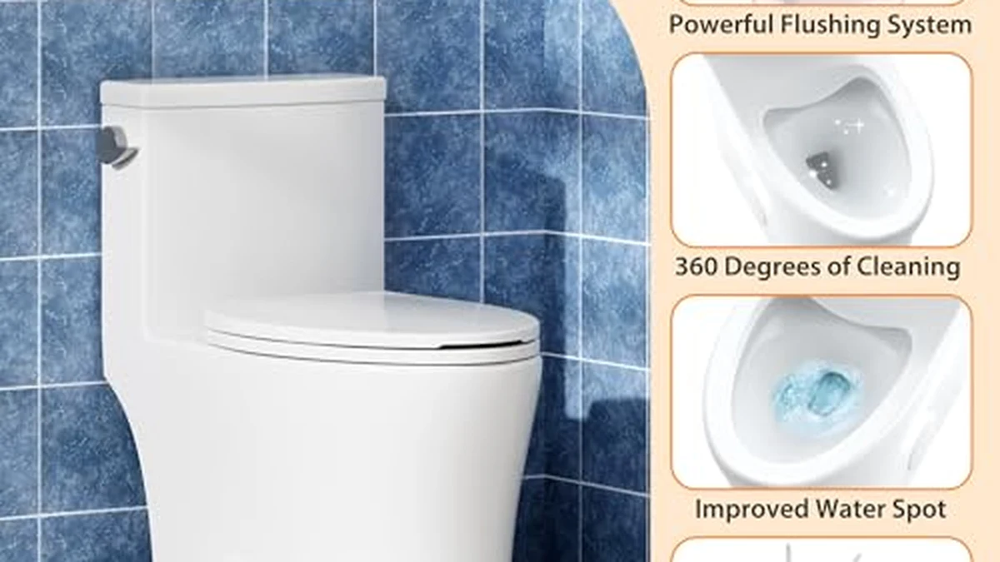

One Piece Toilet Buying Guide (2026): Rough-In, Height & Flush
Prices and picks verified as of August 2026. Independent, reader-supported reviews.


Things to Know Before You Buy
- Measure your rough-in first. The distance from the finished wall to the center of the floor bolts is almost always 12", but older homes can be 10" or 14". Get this wrong and the toilet will not fit.
- Elongated bowls are more comfortable; round bowls save space. Choose round only if a longer bowl would block a door or crowd the room.
- Height matters more than people expect. Comfort/chair height (~17") is easier for tall or older users; standard height (~15") suits kids and shorter users.
- Check whether the seat is included. Some one-piece toilets ship with a soft-close seat; others make you buy one separately.
- One-piece toilets are heavy (80-120 lbs). Plan on a two-person install and a helper to set it on the flange.
A one-piece toilet fuses the tank and bowl into a single molded unit, which is why so many buyers love it: there is no seam between tank and bowl to leak, wobble, or trap grime, and the smooth profile wipes clean in seconds. But the sleek look hides a handful of real decisions, and picking the wrong one leads to a fixture that does not fit your bathroom, sits at the wrong height, or clogs every other week.
The good news is that choosing well comes down to five measurable specs: rough-in, bowl shape, seat height, flush type, and whether the trapway is skirted. Nail those and almost any reputable one-piece toilet will serve you for a decade or more. Get one wrong and even a premium model becomes a daily annoyance.
This guide walks through each spec in plain language, points out the mistakes that trip up first-time buyers, and finishes with three vetted picks at different price points so you can move from research to a confident purchase.
What You Need to Know
Before you compare brands or prices, get comfortable with the five specifications that actually determine fit and performance. Every product page lists them, and every one of them can make or break your purchase.
1. Rough-in — the number to measure first
The rough-in is the distance from the finished back wall to the center of the closet bolts that hold the toilet to the floor. The overwhelming standard is 12 inches, but some older or space-constrained homes use 10 inches or 14 inches. Measure from the wall (not the baseboard) to the center of the bolt caps on your existing toilet before you buy anything. A 12-inch toilet will not sit flush in a 10-inch space, and this single measurement is the number-one fit mistake buyers make.
2. Bowl shape — elongated vs round
Elongated bowls are roughly two inches longer front to back, which most adults find noticeably more comfortable, and they are the most popular choice today. Round bowls take up less floor space and are worth choosing only when a longer bowl would crowd the room or block a door swing in a small bathroom.
3. Seat height — standard vs comfort
Standard height puts the seat around 15 inches off the floor, which works well for children and shorter users. Comfort height (also called chair height) sits closer to 17 inches, meets ADA guidance, and is far easier on tall adults, anyone with knee or back issues, and older users who struggle to lower themselves onto a low seat.
4. Flush — single vs dual, and flush power
A single-flush toilet uses one volume every time (commonly 1.28 or 1.6 GPF). A dual-flush model gives you a lighter button for liquid waste (around 1.1 GPF) and a fuller flush (around 1.6 GPF) for solids, which saves water over the year. Look for the EPA WaterSense label and a strong flush design — a well-engineered vortex or siphon flush clears the bowl on the first try and is the best defense against clogs.
5. One-piece design and the skirted trapway
The one-piece body already removes the tank-to-bowl seam, but also check whether the trapway is skirted — that is, whether the sides are smooth and fully enclosed rather than showing the S-curve of the drain. A skirted, seamless exterior has almost nothing for dust and grime to cling to, which is a big part of why one-piece toilets are so easy to keep clean.
Types and Categories
Once you understand the five specs, the "types" of one-piece toilets are really just combinations of them. Here is how the categories break down.
By bowl shape: elongated vs round
The most common split. Elongated one-piece toilets dominate the market because of the comfort advantage; round models exist mainly for powder rooms and tight layouts where every inch counts.
By seat height: standard vs comfort
Comfort-height one-piece toilets have become the default in new construction and remodels aimed at aging in place. Standard-height models remain popular in kids' bathrooms and homes where shorter users prefer a lower seat.
By flush system: single-flush vs dual-flush
Single-flush models are simple and reliable, with one button or lever. Dual-flush models add a second, lighter flush option to trim water use — a meaningful saving in a household that flushes dozens of times a day. Both can be highly efficient; the key is the underlying flush engineering, not just the button count.
By exterior: skirted vs exposed trapway
Skirted one-piece toilets hide the drain curve behind a smooth, continuous side, making them the easiest to wipe down. Exposed-trapway models show the contoured drain and cost a little less, but they collect dust in the crevices and take longer to clean.
How to Choose
With the vocabulary out of the way, choosing your toilet becomes a short, ordered checklist. Work through it in this sequence and you will not go wrong.
- Measure the rough-in before anything else. Confirm it is 10, 12, or 14 inches and buy a toilet built for that exact number. This is non-negotiable — every other decision assumes the toilet physically fits.
- Pick the height for the people who will use it. Choose comfort height (~17") for tall or older users and most adults; standard height (~15") for households centered on young children.
- Go elongated unless space forces your hand. An elongated bowl is more comfortable for daily use; switch to round only if a longer bowl would block a door or crowd a small room.
- Choose dual-flush if water savings matter. If you want to trim your water bill and your usage, a WaterSense dual-flush model pays off over time. A strong single-flush is perfectly fine if you prefer simplicity.
- Confirm the seat is included — or budget for one. Check the listing for a bundled soft-close seat. If it is not included, add the cost of a matching seat to your total.
- Favor a skirted, seamless body if easy cleaning is a priority, and verify the flush is a proven vortex or siphon design so you are not fighting clogs.
Common Mistakes to Avoid
Most disappointing toilet purchases trace back to the same handful of avoidable errors. Watch for these.
- Not measuring the rough-in. Assuming every toilet is 12 inches is the single most common — and most expensive — mistake. A mismatch means a toilet that will not seat against the flange, and a return trip.
- Buying elongated for a tiny bathroom. An elongated bowl is great until it blocks the door or leaves no knee room. Measure your clearance before committing to the longer bowl.
- Ignoring flush power. A weak flush is the root cause of most clogs. Do not choose on looks alone — favor models with a proven siphon or vortex flush and, ideally, a MaP (Maximum Performance) rating.
- Forgetting the seat isn't always included. Buyers often assume a seat comes in the box and then discover an extra purchase after the toilet arrives. Read the "what's included" line.
- Underestimating the weight. A one-piece toilet can weigh 80 to 120 pounds in one solid unit. Trying to set it solo risks a cracked bowl, a broken flange, or an injured back — line up a second person.
Care and Maintenance
A one-piece toilet is one of the lowest-maintenance fixtures in the house, but a little routine care keeps it flushing strong and looking new for years.
- Clean the seamless surface regularly. The smooth, skirted body is the easy part — a soft cloth and a non-abrasive bathroom cleaner wipe it down in seconds, with no tank-to-bowl seam to scrub.
- Check the flush valve and flapper once a year. A worn flapper is the usual cause of a running toilet and phantom refills. Inspect it annually and replace the inexpensive part when it stops sealing.
- Avoid harsh abrasives on the glaze. Scouring powders and stiff pads can dull the porcelain finish over time. Stick to liquid or gel cleaners and a soft brush to protect the glaze.
- Keep the bolts and caps tight. Check the floor bolts and any tank hardware periodically; snug them if you feel movement to prevent wobble and seal leaks.
- Skip in-tank drop-in tablets with harsh chemicals. Bleach-based tablets can degrade rubber seals and flush components faster. If you use one, choose a seal-safe formula.
- Tackle hard-water stains early. If you have hard water, mineral rings can build up at the waterline over time. A mild acidic cleaner such as diluted white vinegar, left to sit and then brushed, removes them without scratching the glaze — far gentler than a pumice stone or scouring pad.
Do these few things and a one-piece toilet essentially takes care of itself. The seamless body is the whole point: with no tank-to-bowl gap to leak or collect grime, routine upkeep is a quick weekly wipe and an annual glance inside the tank — a fair trade for a fixture you will use every day for the next ten to fifteen years.
Our Top Picks
To turn all of this into a decision, here are three one-piece toilets we would confidently recommend at different price points. Each one gets the fundamentals right — sensible rough-in, comfortable elongated bowl, and a flush that actually clears the bowl.

Editor’s Pick
WOODBRIDGEE One Piece Toilet with
The best all-around choice: an elongated, comfort-height WOODBRIDGE with a bundled soft-close seat, a smooth skirted body, and a strong siphon flush at a standard 12-inch rough-in. It hits every spec in this guide without overspending.
$318.93
Check Price on Amazon
Best Value
DeerValley Elongated One-Piece Toilet with
The value pick: a DeerValley elongated one-piece that delivers a comfortable seat height and a water-saving flush for well under most competitors. If you want the one-piece look and feel on a budget, start here.
$240.80
Check Price on Amazon
Premium Choice
HOROW T0338WM Elongated One Piece
The premium pick: a HOROW matte-white one-piece with a fully seamless, skirted body and dual-flush operation. The matte finish resists water spots and the enclosed design is about as easy to clean as a toilet gets.
$359.00
Check Price on AmazonFrequently Asked Questions
How do I measure my toilet rough-in?
Measure from the finished back wall to the center of the bolt caps that hold your current toilet to the floor. Measure from the wall itself, not the baseboard. The result is almost always 12 inches, but older homes can be 10 or 14 inches. Buy a toilet built for the exact number you measure.
Are one-piece toilets better than two-piece toilets?
They are not necessarily better at flushing, but they are easier to clean and less prone to leaks because there is no seam between the tank and bowl. One-piece toilets are usually heavier and a bit pricier; two-piece toilets are cheaper and easier to carry and install. For a sleek look and low-maintenance cleaning, one-piece wins.
Should I choose elongated or round, and standard or comfort height?
Choose an elongated bowl for everyday comfort unless a longer bowl would crowd a small bathroom, in which case go round. For height, pick comfort height (about 17 inches) if you are tall, older, or share the bathroom with adults; choose standard height (about 15 inches) mainly for households centered on young children.
Verdict
Buying a one-piece toilet is far simpler once you stop shopping by looks and start shopping by the numbers. Measure your rough-in first, match the seat height to the people who will actually use it, favor an elongated bowl unless space is truly tight, and insist on a proven flush. Do that and you will end up with a fixture that fits on the first try, flushes clean, and wipes down in seconds for the next decade.
If you want a shortcut, the WOODBRIDGE one-piece is our best all-around recommendation, the DeerValley is the value play, and the HOROW matte-white is the premium, easiest-to-clean option. Any of the three gets the fundamentals right — the rest comes down to your budget and your bathroom.